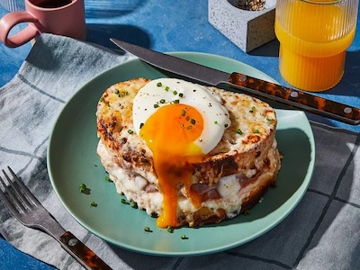

Croque Madame

Croque madame is a fantastic meal, great for breakfast, lunch and dinner! This french spin on a ham sandwich is considered luxurious and tastes great. This recipe serves 1-2 people and takes about 30 minutes to cook. Enjoy!
Ingredients:
- 4 half inch thick firm white sandwich bread slices
- 3 tbsp unsalted butter, softened and divided
- 1 tbsp all-purpose flour
- 3/4 cup whole milk
- 4 oz Gruyere cheese, grated on small holse of box grater (about 1 cup), divided
- 1/2 tsp kosher salt
- 1/4 tsp black pepper, plus extra for garnish
- 1/4 tsp ground nutmeg
- 4 slices cooked unsmoked ham (3 oz total)
- 1 tbsp Dijon mustard
- 2 large eggs
- Chopped fresh chives
- Flaky sea salt
Instructions:
- Preheat oven to broil with rack about 8 inches from heat source. Heat a large nonstick skillet over medium-high. Spread 1 side of bread slices evenly with 1 tablespoon of the butter. Place bread slices, buttered side down, in skillet; cook until toasted and golden, 2 to 4 minutes. Transfer bread to a work surface. Wipe skillet clean.
- Melt 1 tablespoon of the butter in a small saucepan over medium until foamy. Whisk in flour; cook, whisking constantly, until light golden, about 1 minute, 30 seconds. Gradually whisk in milk; bring to a simmer over medium, whisking constantly. Reduce heat to low; cook, whisking often, until thickened, about 3 minutes. Remove from heat. Add 1/4 cup of the grated Gruyère and whisk until melted. Stir salt, pepper, and nutmeg into the Mornay sauce. (If not using immediately, cover surface of sauce directly with plastic wrap for up to 1 hour.)
- Arrange 2 of the bread slices on a work surface, toasted side down. On each slice, spread 2 tablespoons Mornay sauce to evenly to cover the surface. Sprinkle with 1/4 cup grated Gruyère, and top with 2 ham slices. Spread mustard evenly on untoasted sides of remaining 2 bread slices; place, mustard side down, on top of ham-topped slices. Spread remaining Mornay sauce evenly on top of sandwiches, then top with remaining 1/4 cup grated Gruyère.
- Transfer sandwiches to a rimmed baking sheet, and broil in preheated oven until cheese has melted and top is bubbly and browning in spots, 5 to 7 minutes.
- Meanwhile, melt remaining 1 tablespoon butter in cleaned nonstick skillet over medium-high. Crack eggs into skillet; cook, undisturbed, until whites are set but yolks are runny, about 3 minutes.
- Top each sandwich with a fried egg; garnish with chives, flaky sea salt, and additional pepper.